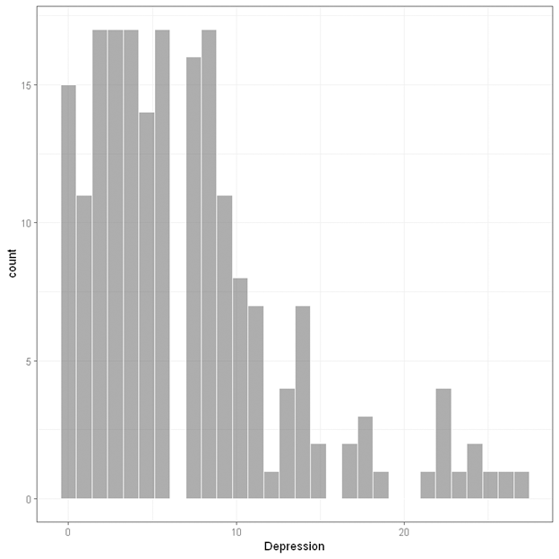
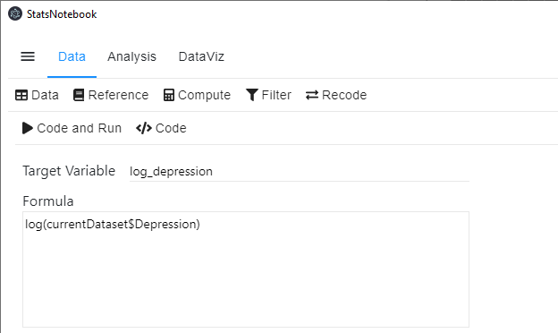
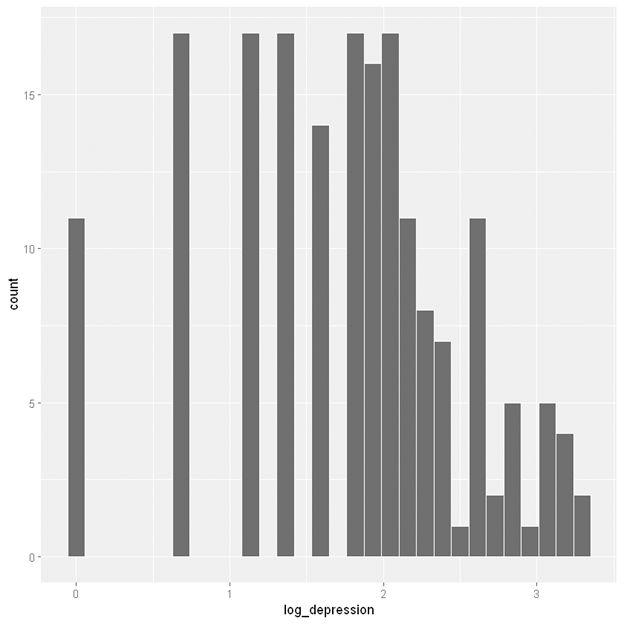
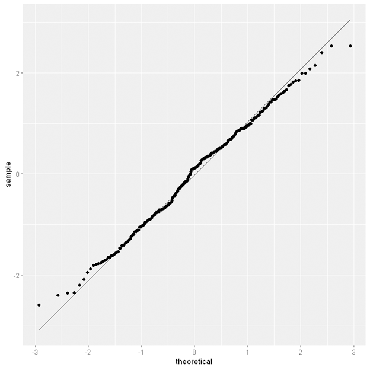
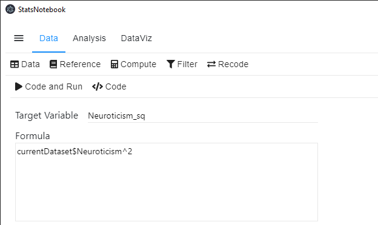

StatsNotebook
Follow our Facebook page or our developer’s Twitter for more tutorials and future updates
StatsNotebook provides a simple menu for creating new variables. We will give two examples below to demonstrate using StatsNotebook to compute new variables.
In these two examples, we will use the built-in Personality dataset. This dataset can be loaded into StatsNotebook using instruction here or can be downloaded from here.
Log transformation
Violation of distributional assumption is common. For example, linear regression requires that the residuals to be normally distribution. In our linear regression example, we regress depression on the Big Five personality factors and sex. The normality plot (QQ plot) from the regression model indicates that the residuals are not normally distributed. Below is the normality plot from that example.

This is largely because depression is positively skewed (a long tail on the right hand side).

One way to improve the model is to perform a log-transformation of the dependent variable, depression.
To create a log-transformed version of depression,
- Click Data at the top
- Click Compute
- In Target Variable, type in the name of the new variable (e.g. log_depression).
- Select Log (natural log) in the Function panel.
- Click on the variable we need to log-transform (e.g. Depression). This would automatically complete the formula in the formula panel.

- Click Code and Run. A new variable log_depression is now created.
The following code will be generated.
currentDataset$log_depression <- log(currentDataset$Depression)
Histogram of this new variable indicates that it is much less skewed.

The residual plot from the linear regression using the log-transformed depression variable shows little evidence of violating the normality assumption.

Quadratic term
A quadratic term of an independent variable is often added to a regression model to test for curvilinear relationship. Suppose that we want to test if there is a curvilinear relationship between Depression and Neuroticism, we can create a quadratic term of Neruoticism and enter it into a linear regression model.
To create a quadratic term,
- Click Data at the top
- Click Compute
- In Target Variable, type the name of the new variable (e.g. Neuroticism_sq)
- Select Neuroticism from the Variable panel. The term currentDataset$Neuroticism will appear in the Formula panel
- Type ^2 at the end of the term

- Click Code and Run. A new variable Neuroticism_sq will be created.
The following code will be generated.
currentDataset$Neuroticism_sq <- currentDataset$Neuroticism^2
Follow our Facebook page or our developer’s Twitter for more tutorials and future updates